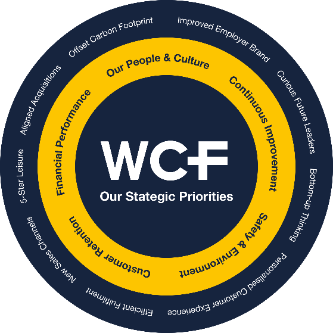
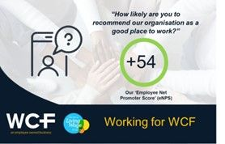

Benefits of Employee Ownership

WCF is proud to be partly owned by its employees, with all our family of employee owners being fortunate enough to have a personal stake in the company in which they work. We think being employee owned makes us special but don’t just take our word for it. Read on to find out more about the benefits of employee ownership and why not look at our vacancies page to discover how you can join the WCF family?
Better for WCF
There is independent research that shows that employee-owned companies are more successful, productive, profitable and sustainable than their competitors. This is good news for all WCF stakeholders including our customers and supply partners.
Focussed on the long-term success of the business rather than short-term profitability, better decisions can be made to continue to develop our legacy. This allows us to grow steadily and organically, avoiding undue risk which benefits the short over the long term.
As a result, alongside the diversity of our income streams, WCF has displayed remarkable resilience across our 110+ year history. We are a thriving business with huge stability of employment. Our organisation is led by an authentic team who put their employee owners first.

We invest heavily in the personal development of our people and as such our employee retention rates are better than average as our talented and committed people choose to develop their careers with a company they own. We pride ourselves on supporting our employee-owners to be the best they can be and in return, value their loyalty and encourage them to leave their personal legacy on our business.
As an employee-owned business, we don’t need to worry about seller succession, or the business being sold - we can continue to make good decisions for our employee owners. Our vision outlines our desire to “hand WCF over the future generations of employees in a stronger financial position than when we inherited it, so that they can benefit from its continued existence and resilience.” This allows continued succession and ensures that the WCF legacy, history and culture is passed on.

Better for our Employee Owners
Because they’re emotionally and financially invested in WCF, our employee owners are more committed to the company and its success and adopt a more curious and entrepreneurial viewpoint by thinking and acting like owners and providing significant discretionary effort for the benefit of WCF.
Our General Managers run their business as if it were their own and a huge amount of autonomy and trust is devolved into our people. This gives our teams a tremendous sense of purpose and collective responsibility in continuing the valuable legacy of WCF. 84% of our employee owners in our most recent employee engagement survey stated that working for WCF encourages them to go Above and Beyond.
Our values-based culture ensures an inclusive workplace that promotes, and rewards great behaviours and our employee owners are highly engaged to make a difference. We enjoy high levels of employee morale. Our eNPS score in our most recent employee engagement survey was classed as “Outstanding” according to independent, external benchmarking.
Our mission puts our employee owners at the heart with our ambition “to create a workplace where every individual matters and has a unique opportunity to make a difference to our performance with meaningful, diverse and interesting roles”. We believe that if people have fun at work they are more likely to stay. In our most recent employee engagement survey 86% of employee owners said they would happily see themselves working for WCF in a years’ time.
Financial Benefits of Employee Ownership
As a Real Living Wage employer, we genuinely care for our employee owners and have a range of benefits to recognise and celebrate their success as well as support their financial wellbeing. We share the rewards of our financial success equally across the business with an annual Employee Ownership Dividend payment and the issue of free shares if we reach our targets. Last year we shared £0.6m of our profits with our employee owners. Employees are able to take advantage of a number of tax efficient savings schemes to invest in WCF shares which helps them build additional wealth in the form of WCF shares from their own earnings.
Using our Employee Voice
We firmly believe that employee participation and collaboration deliver superior business performance and develops more engaged teams. We have a variety of ways, both formal and informal, in which our employee owners are encouraged to be involved. Everyone is empowered with the opportunity to make a difference. We are open in our sharing of information so that everyone understands our key measures and drivers of performance and what we need to do to be more productive. This transparency is particularly important when things are not going so well. We encourage all our employee owners to think with a growth mindset to drive innovation and new ways of working.
In our most recent employee engagement survey 89% of our teams said that “As an employee owner I understand that I have a key role to play in sustaining the legacy of WCF for future generations of employees.”
Better for our Local Communities
WCF is committed to providing meaningful and diverse roles for our people in the rural communities in which we are based. This allows our teams to develop interesting careers in some of the most beautiful areas of the country and promotes a great work life balance.
We have a strong sense of corporate social responsibility, supporting many local community bodies financially, with product support, and with our time. Our charitable efforts are focussed on the interests of our people, supporting them financially to raise money for the causes that are important to them.
Better for our Key Supply Partners
Our preferred way to do business is to develop meaningful and long-term relationships of mutual respect and trust with our key supply partners and to apply our values and Guiding Principles to these relationships. We see the people in these partners as an extension of our own teams and treat them in that way. Where possible we will support local businesses, with our teams authorised to negotiate as they see fit, and we have very few centralised supply contracts.
Better for the UK Economy
A combination of shared ownership and employee participation delivers superior business performance which contributes to the success and diversity of Britain’s economy. Employee ownership is a successful and resilient alternative corporate structure for the right types of businesses. Employee-owned businesses, with large and significant employee ownership stakes, now contribute over £30 billion to GDP (4%).
“…That’s the WCF Way”
< Previous Article Why Is WCF Such An Outstanding Place To Work